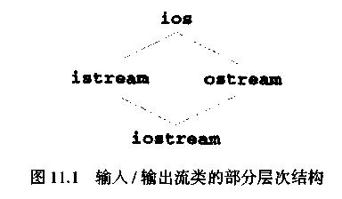
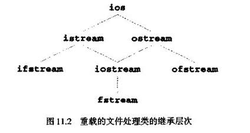

iostream类库包含了许多用于处理大量I/O操作的类。其中，类istream支持流输入操作．类ostream支持流输出操作，类iostream同时支持流输入和输出操作。
类istream和类ostream是通过单一继承从基类ios派生而来的。类iostream是通过多重继承从类istream和ostream派生而来的。
继承的层次结构见图11.1。
运算符重载为完成输入/输出提供了一种方便的途径。重载的左移位运算符( <<)表示流的输出，称为流插入运算符；重载的右移位运算符(>>)表示流的输入，称为流读取运算符。这两个运算符可以和标准流对象cin、cout、cerr、clog以及用户自定义的流对象—起使用。

cin是类istream的对象，它与标准输入设备(通常指键盘)连在一起。下面的语句用流读取运算符把整数变量grade(假设grade为int类型)的值从cin输入到内存中。
cin >> grade;
注意，流读取运算符完全能够识别所处理数据的类型。假设已经正确地声明了grade的类型，那么没有必要为指明数据类型而给流读取运算符添加类型信息。
cout是类ostream的对象，它与标准输出设备(通常指显示设备)连在一起。下面的语句用流插入运算符cout把整型变量grade的值从内存输出到标准输出设备上。
cout << grade；
注意，流插入运算符完全能够识别变量grade的数据类型，假定已经正确地声明了该变量，那么没有必要再为指明数据类型而给流插入运算符添加类型信息。
cerr是类osteam的对象，它与标准错误输出设备连在一起。到对象cerr的输出是非缓冲输出，也就是说插入到cerr中的输出会被立即显示出来，非缓冲输出可迅速把出错信息告诉用户。
clog是类ostream的对象，它与标准错误输出设备连在一起。到对象clog的输出是缓冲翰出。即每次插入clog可能使其输出保持在缓冲区，要等缓冲区刷新时才输出。
C++中的文件处理用类ifstream执行文件的输入操作，用类ofstream执行文件的输出操作，用类fstream执行文件的输入/输出操作。类ifstream继承了类istream，类ofstream继承了类ostream，类fstream继承了类iostream。与I/O相关的类的继承关系见图11．2。虽然多数系统所支持的完整的输入／输出流类层次结构中还有很多类，但这里列出的类能够实现多数程序员所需要的绝大部分功能。如果想更多地了解有关文件处理的内容，可参看C++系统中的类库指南。

C++的类ostream提供了格式化输出和无格式输出的功能。输出功能包括：用流插入运算符输出标准类型的数据；用成员函数put输出字符；成员函数write的无格式化输出(11．5节)；输出十
进制、八进制、十六进制格式的整数(11.6.1节)；输出各种精度的浮点数(11.6.2节)、输出强制带有小数点的浮点数(11．7．2节)以及用科学计数法和定点计数法表示的浮点数(11．7．6节)；输出在指定域宽内对齐的数据(11．7．3节)；输出在域宽内用指定字符填充空位的数据(11．7．4节)；输出科学计数法和十六进制计数法中的大写字母(11．7．7节)。